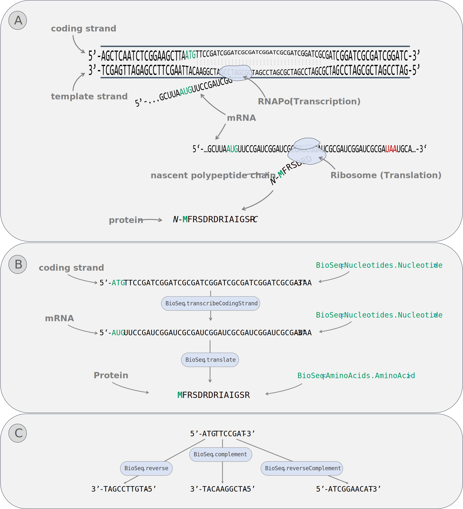

BioCollections


Summary: This example shows how to use collections of biological items in BioFSharp
Analogous to the build-in collections BioFSharp provides BioSeq, BioList and BioArray for individual collection specific optimized operations.
The easiest way to create them are the ofBioItemString -functions
open BioFSharp
let s1 = "PEPTIDE" |> BioSeq.ofAminoAcidString
let s2 = "PEPTIDE" |> BioList.ofAminoAcidString
let s3 = "TAGCAT" |> BioArray.ofNucleotideString
//Peptide represented as a Bioseq
"PEPTIDE" |> BioSeq.ofAminoAcidString
//Peptide represented as a BioList
"PEPTIDE"|> BioList.ofAminoAcidString
//Nucleotide sequence represented as a BioArray
"TAGCAT" |> BioArray.ofNucleotideString
Nucleotides

Figure 1: Selection of covered nucleotide operations (A) Biological principle. (B) Workflow with BioSeq. (C) Other covered functionalities.
Let's imagine you have a given gene sequence and want to find out what the according protein might look like.
let myGene = BioArray.ofNucleotideString "ATGGCTAGATCGATCGATCGGCTAACGTAA"
Yikes! Unfortunately we got the 5'-3' coding strand. For proper transcription we should get the complementary strand first:
let myProperGene = BioArray.complement myGene
Now let's transcribe and translate it:
let myTranslatedGene =
myProperGene
|> BioArray.transcribeTemplateStrand
|> BioArray.translate 0
Of course, if your input sequence originates from the coding strand, you can directly transcribe it to mRNA since the only difference between the coding strand and the mRNA is the replacement of 'T' by 'U' (Figure 1B)
let myTranslatedGeneFromCodingStrand =
myGene
|> BioArray.transcribeCodingStrand
|> BioArray.translate 0
Other Nucleotide conversion operations are also covered:
let mySmallGene = BioSeq.ofNucleotideString "ATGTTCCGAT"
let smallGeneRev = BioSeq.reverse mySmallGene
let smallGeneComp = BioSeq.complement mySmallGene
let smallGeneRevComp = BioSeq.reverseComplement mySmallGene
AminoAcids
Basics
Some functions which might be needed regularly are defined to work with nucleotides and amino acids:
let myPeptide = "PEPTIDE" |> BioSeq.ofAminoAcidString
let myPeptideFormula = BioSeq.toFormula myPeptide |> Formula.toString
let myPeptideMass = BioSeq.toAverageMass myPeptide
Digestion
BioFSharp also comes equipped with a set of tools aimed at cutting apart amino acid sequences. To demonstrate the usage, we'll throw some trypsin at the small RuBisCO subunit of Arabidopos thaliana:
In the first step, we define our input sequence and the protease we want to use.
let RBCS =
"""MASSMLSSATMVASPAQATMVAPFNGLKSSAAFPATRKANNDITSITSNGGRVNCMQVWP
PIGKKKFETLSYLPDLTDSELAKEVDYLIRNKWIPCVEFELEHGFVYREHGNSPGYYDGR
YWTMWKLPLFGCTDSAQVLKEVEECKKEYPNAFIRIIGFDNTRQVQCISFIAYKPPSFT"""
|> BioArray.ofAminoAcidString
let trypsin = Digestion.Table.getProteaseBy "Trypsin"
With these two things done, digesting the protein is a piece of cake. For doing this, just use the digest function.
let digestedRBCS = Digestion.BioArray.digest trypsin 0 RBCS
digestedRBCS
|> Seq.head
(*
In reality, proteases don't always completely cut the protein down. Instead, some sites stay intact and should be considered for in silico analysis.
This can easily be done with the `concernMissCleavages` function. It takes the minimum and maximum amount of misscleavages you want to have and also the digested protein. As a result you get all possible combinations arising from this information.
*)
let digestedRBCS' = Digestion.BioArray.concernMissCleavages 0 2 digestedRBCS
digestedRBCS
|> Seq.item 1
module BioSeq from BioFSharp.BioCollectionsExtensions
--------------------
module BioSeq from BioFSharp
<summary> This module contains the BioSeq type and its according functions. The BioSeq type is a sequence of objects using the IBioItem interface </summary>
<summary> Generates AminoAcid sequence of one-letter-code raw string </summary>
module BioList from BioFSharp.BioCollectionsExtensions
--------------------
module BioList from BioFSharp
<summary> This module contains the BioList type and its according functions. The BioList type is a List of objects using the IBioItem interface </summary>
<summary> Generates amino acid sequence of one-letter-code raw string </summary>
module BioArray from BioFSharp.BioCollectionsExtensions
--------------------
module BioArray from BioFSharp
<summary> This module contains the BioArray type and its according functions. The BioArray type is an array of objects using the IBioItem interface </summary>
<summary> Generates nucleotide sequence of one-letter-code raw string </summary>
<summary> Create the complement DNA or cDNA (from RNA) strand. For example, the sequence "ATGC" is converted to "TACG" </summary>
<summary> Transcribe a given DNA template strand (3'-----5') </summary>
<summary> translates nucleotide sequence to aminoacid sequence </summary>
<summary> Transcribe a given DNA coding strand (5'-----3') </summary>
<summary> Generates nucleotide sequence of one-letter-code raw string </summary>
<summary> Create the reverse DNA or RNA strand. For example, the sequence "ATGC" is converted to "CGTA" </summary>
<summary> Create the complement DNA or cDNA (from RNA) strand. For example, the sequence "ATGC" is converted to "TACG" </summary>
<summary> Create the reverse complement strand meaning antiparallel DNA strand or the cDNA (from RNA) respectivly. For example, the sequence "ATGC" is converted to "GCAT". "Antiparallel" combines the two functions "Complement" and "Inverse". </summary>
<summary> Returns formula </summary>
<summary> Contains functionality for working with molecules as a formula of their elements and formulas of biologically relevant molecules </summary>
<summary> Returns Formula as string </summary>
<summary> Returns average mass of the given sequence </summary>
<summary> Generates amino acid sequence of one-letter-code raw string </summary>
<summary> Contains types and functions needed to digest amino acid sequences with proteases </summary>
<summary> Contains frequently needed proteases </summary>
<summary> Takes Proteinsequence as input and returns Array of resulting DigestedPeptides </summary>
<summary> Returns Sequence of DigestedPeptides including those resulting of one or more Misscleavage events. </summary>